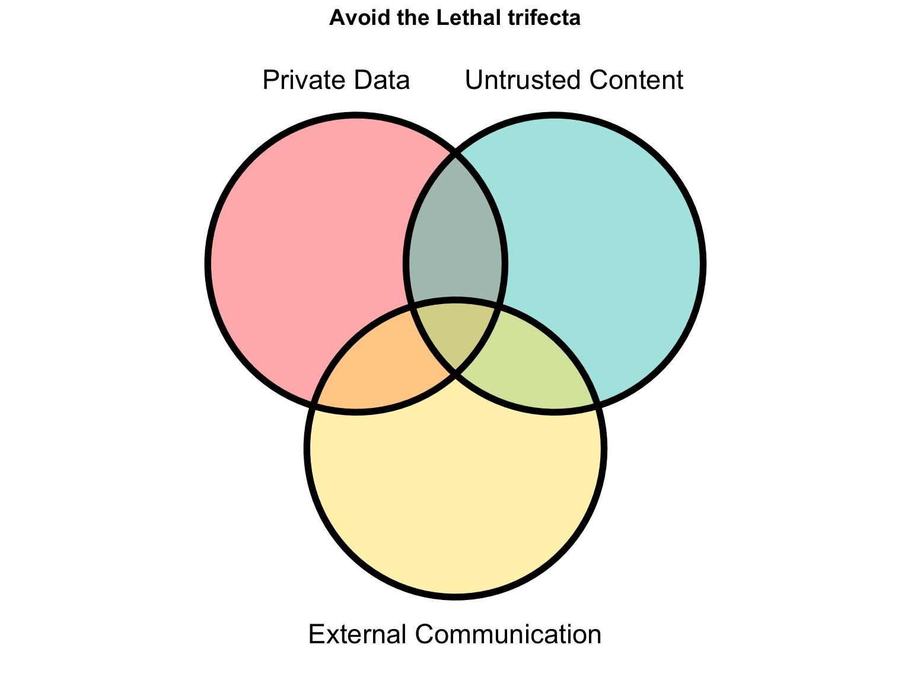
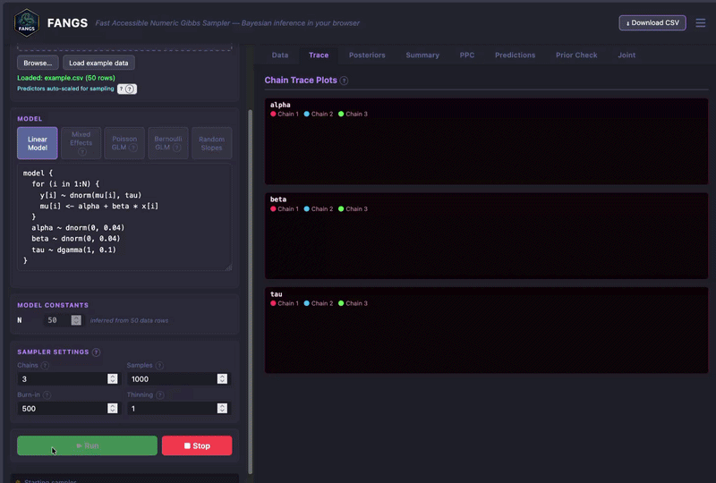
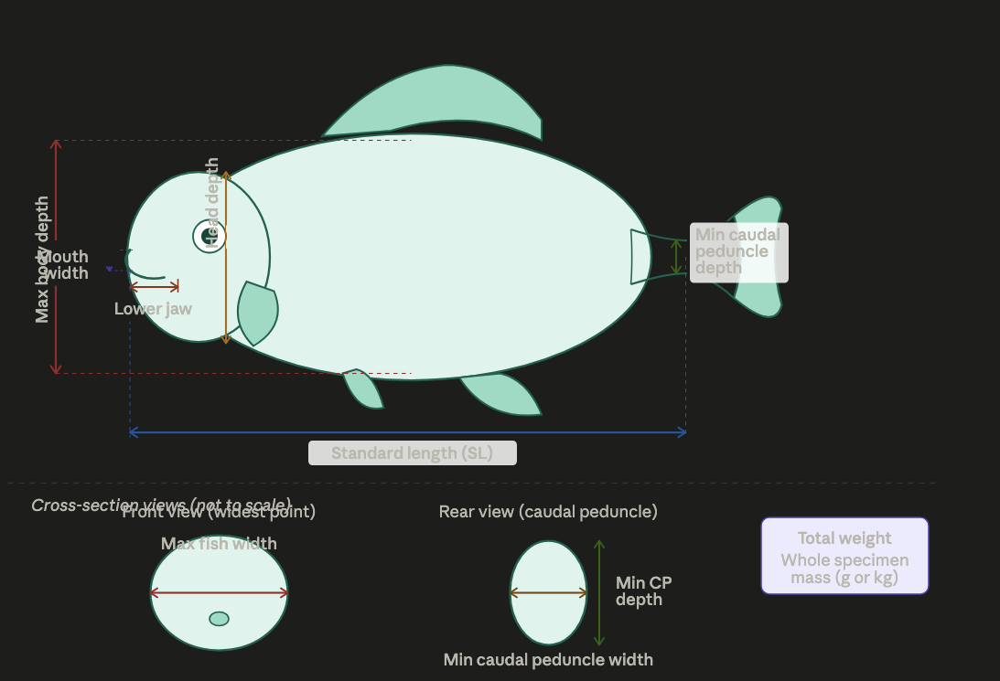
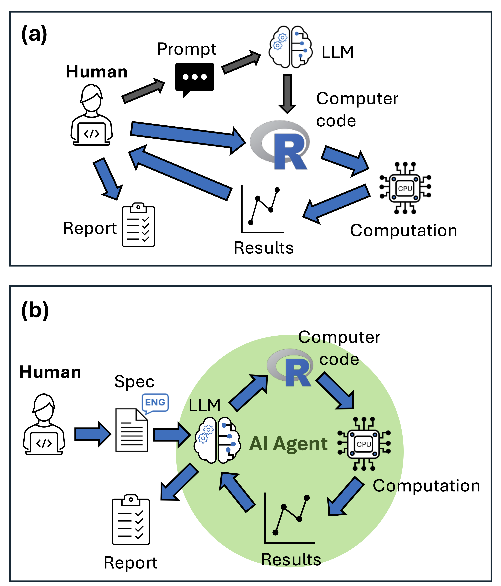
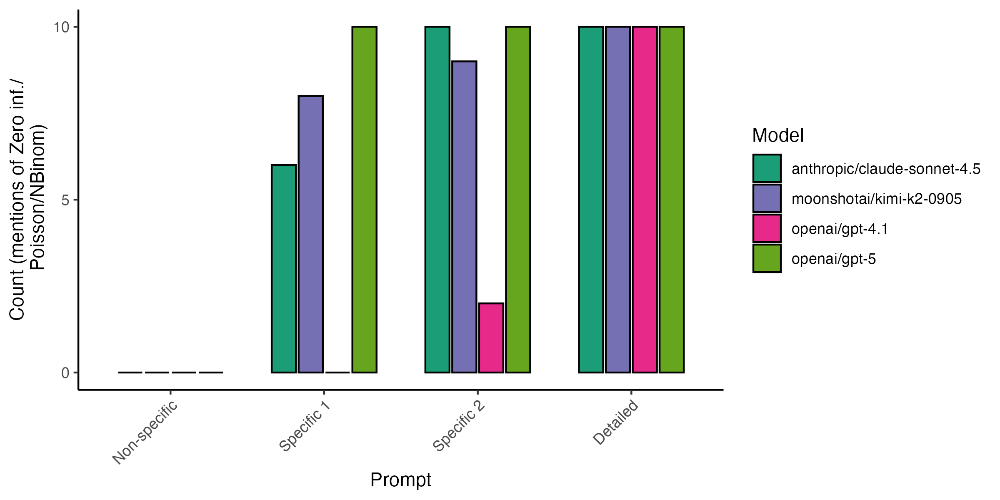
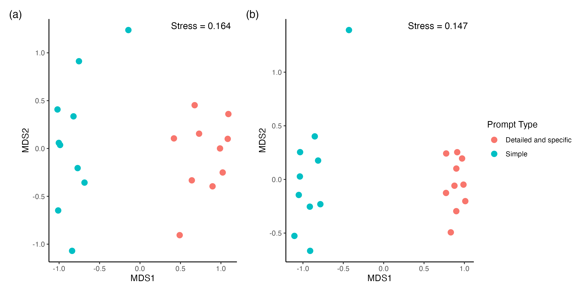
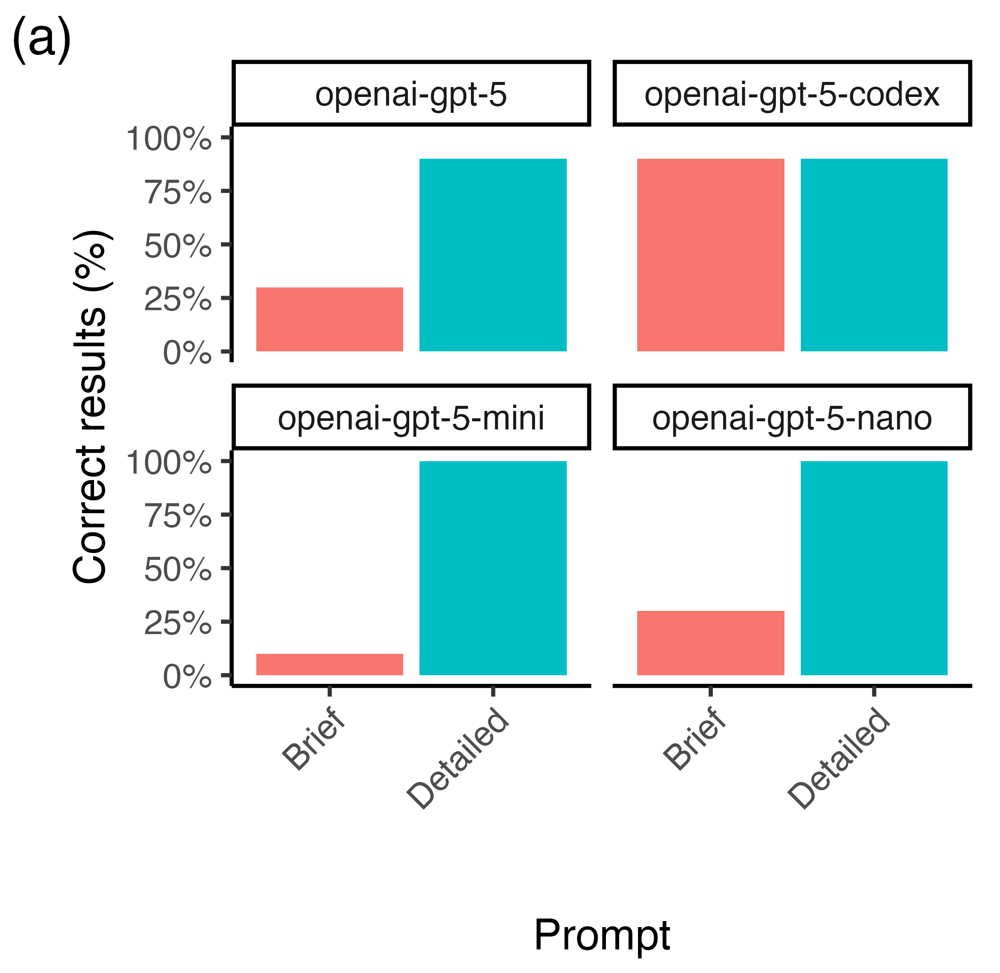
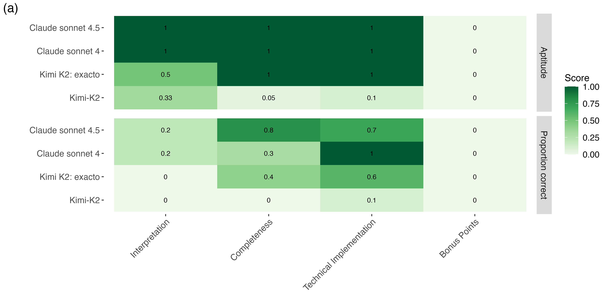

Generative AI for Coding and Research: An FAQ
Slides and links from a recent talk.
Generative AI - Incredible and…

Underwhelming

Aims
- Understand generative AI
- Learn key terms
- Use these tools effectively in research
What is GenAI?
- Artificial intelligence that generates new content (text, images, code)
- We’ll focus on Large Language Models
- Excel at logic and code generation
- Can interpret images, use browsers, debug code, access tools and the internet
- Predicted to be fully capable software developers in 1-3 years
How do LLMs work?
- Complex neural networks with multiple layer types
- Trained on large corpus of text data
- Generate content by predicting the next token (word)
- Watch explanation: 1:25-2:50
What is an AI Assistant?
Software that manages your interactions with an LLM.
Examples: Copilot, ChatGPT, Github Copilot, Claude Code
Using AI Assistants with R
- Claude Code or Github Copilot in VSCode
- Positron assistant
- AI R packages like gandar
- See Luis Verde’s page
Ways to Use LLMs for R
- Chat with an assistant for help
- Use keystroke assistants for code autocomplete
- Deploy agents to write code
- Integrate LLMs into your own R functions
What is an LLM Agent?

How LLMs Help with Data Analysis
Three-step workflow:
- Plan statistical analysis
- Plan implementation
- Write code
Step 1: Statistical Approach Selection
Example prompt:
“I want to statistically test the dependence of fish abundance on coral cover. I have observations of coral cover (continuous %) and fish abundance (count). Data from 49 locations with standardized surveys. Sites are spatially clustered into regions. Provide several statistical approaches with assumption verification and visualizations. Reason step-by-step.”
Better Prompts = Better Results

Step 2: Plan Implementation
Structure your context as a README.md:
- Project title
- Research context and aims
- Analysis methodology
- Technology context (R packages)
- Analysis steps
- Directory structure
- Data locations and metadata
Planning Improves Code Consistency

Step 3: Write the Code

General Advice
- Be detailed and specific in prompts
- Plan the steps upfront
- Keep files organized
- Provide context (but avoid irrelevant information)
- Build in tests and verification
- Give information upfront, avoid conversation
Mansplain the LLM!
LLM Agent ability at Data Analysis

What is “Vibe Coding”?
“Fully give in to the vibes, embrace exponentials, and forget that the code even exists.”
— Andrej Karpathy
(This is not how we should use LLM agents for research)
When is it ok to use LLM agents?
- Low importanc taskse: Tasks that don’t affect others (e.g., educational games)
- High importance tasks: Only when you can verify the accuracy of results.
- Build verification into your workflow (e.g., visualizations, tests, expert review)
Easy vs. Hard Verification
Hard to verify: - “How would I do this analysis?” - Requires expert knowledge to evaluate the quality of the response
Easy to verify: - “Generate 10 figures for this data” - Visual inspection + domain knowledge
Do LLMs Actually Save Time?

Do LLMs Actually Save Time?
- There’s a big grey area between AI slop and useful output
- Need to be careful how you use the tools
Environmental Costs
Relatively small impacts for individual users, but growing energy demand for the sector.

Recent summary on AI electricity use
Consider efficiency when choosing tools and models.
Privacy and Security
The lethal trifecta: avoid all three together
Never send proprietary or sensitive data to untrusted services with external communication capabilities.
Summary advice for AI in data analysis
- Use genAI judiciously so
- You don’t waste your time improving slop
- You don’t waste energy
- You don’t compromise security
- Experiment to see work works
- Aim for quality over quantity